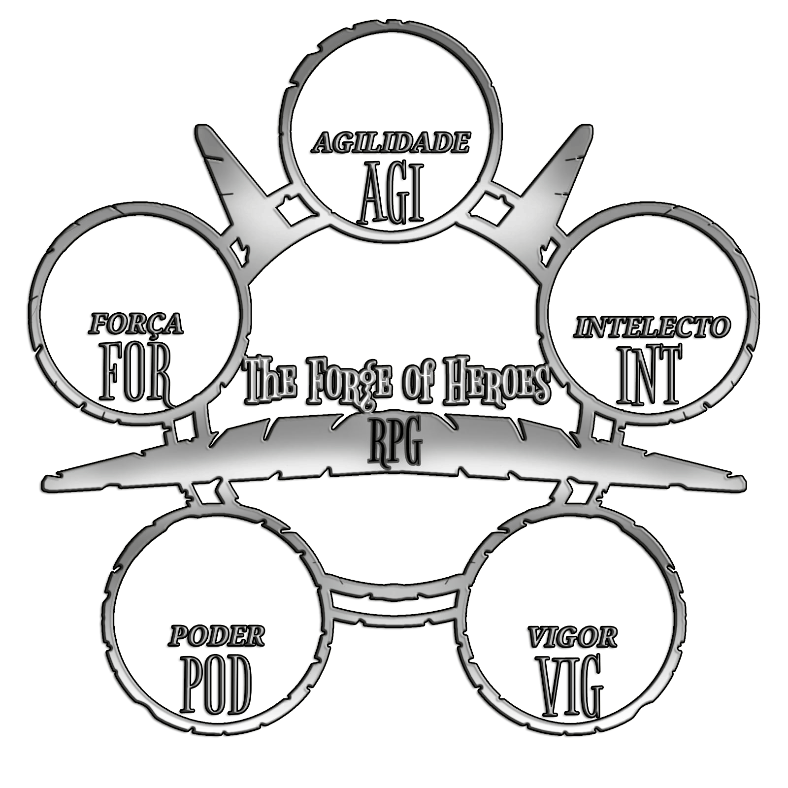

Ola seja bem vindo a sua ficha virtual!
| 44/44 |
| 68/68 |
| Atributos |
| Escutar = 40: 10Ex 23Bom 40Nor |
| Constituição = 40: 10Ex 23Bom 40Nor |
| Destreza = 10: 2Ex 4Bom 10Nor |
| Resistência = 70: 19Ex 42Bom 70Nor |
| Encontrar = 10: 2Ex 4Bom 10Nor |
| Furtividade = 30: 7Ex 17Bom 30Nor |
| Pontaria = 30: 7Ex 17Bom 30Nor |
| Enganação = 20: 4Ex 10Bom 20Nor |
| Aparência = 20: 4Ex 10Bom 20Nor |
| Examinação = 20: 4Ex 10Bom 20Nor |
| Luta/Corpo = 30: 7Ex 17Bom 30Nor |
| Saltar = 20: 4Ex 10Bom 20Nor |
| Investigação = 20: 4Ex 10Bom 20Nor |
| Sorte = 40: 10Ex 23Bom 40Nor |
| Ats = 10: 2Ex 4Bom 10Nor |
| Reflexo = 40: 10Ex 23Bom 40Nor |
| Medicina = 40: 10Ex 23Bom 40Nor |
| Inteligência = 30: 7Ex 17Bom 30Nor |
| Habilidades |
| Golpe potente: Gasta 3PE e adiociona 1d6 ao dano fisico. |
| Ecletico = 50: 13Ex 29Bom 50Nor em qualquer pericia mesmo que não tenha na ficha 4PE hora rolar. |
| Sangue = Armadura de sangue 5 + em resistência e 5 a menos no dano 3p Cria uma águia de sangue que vai até o usuário em curta distância é necessário que tenha sangue no cenário ou que o usuário tenha uma bolsa de sangue. |
| Poder = Disparo de poder 2d8 4p Reúne uma peque na quantidade de energia controlada na ponta de um dos dedos para usar é necessário segurar uma arma de qualquer tipo. |
| Sangue = Ruptura 2d12 4p O usuário começa a ter várias veias e parte da sua carne estouradas causan do um grande dano, Constituição, Constituição com Vigor ou Resistência com Vigor reduz o dano para ser usado o usuário precisa estar sangrando. |
27
11
| Armas equipadas |
| Pistola = 1d10 |
2
2
1
2
1
